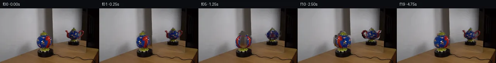

![首帧]()

Round 00
2026-11-05T04:18:28.907933+00:00像素候选变化代码 +241/−0inspection 更新
pixels bc86a78fb742445b · code cf21f7117fa4f658
查看本轮 generate.py 真实 diff
--- previous/generate.py +++ current/generate.py @@ -0,0 +1,241 @@ +from pathlib import Path + +import cv2 +import numpy as np +from PIL import Image, ImageDraw, ImageFont + +import artifact_io + + +ROOT = Path(__file__).resolve().parent +W, H = 256, 144 + + +def polygon_mask(points): + mask = np.zeros((H, W), np.uint8) + cv2.fillPoly(mask, [np.asarray(points, np.int32)], 255) + return mask + + +def ellipse_mask(center, axes): + mask = np.zeros((H, W), np.uint8) + cv2.ellipse(mask, tuple(map(int, center)), tuple(map(int, axes)), 0, 0, 360, 255, -1) + return mask + + +def soften(mask, sigma=0.55): + return cv2.GaussianBlur(mask.astype(np.float32) / 255.0, (0, 0), sigma) + + +def over(dst, layer, alpha): + a = np.clip(alpha[..., None], 0.0, 1.0) + return dst * (1.0 - a) + layer.astype(np.float32) * a + + +def sphere_remap(source, cx, cy, rx, ry, theta): + """Turn a photographed ellipsoid about its vertical axis. + + Every scanline is treated as a latitude circle. The visible longitude is + advanced by theta and projected back with sine. This keeps the silhouette + fixed but moves photographed decoration and shading around it. + """ + yy, xx = np.mgrid[0:H, 0:W].astype(np.float32) + v = (yy - cy) / max(ry, 1.0) + row_radius = rx * np.sqrt(np.maximum(0.0, 1.0 - v * v)) + safe_radius = np.maximum(row_radius, 0.5) + u = np.clip((xx - cx) / safe_radius, -1.0, 1.0) + longitude = np.arcsin(u) + theta + map_x = cx + row_radius * np.sin(longitude) + map_y = yy + return cv2.remap( + source, + map_x.astype(np.float32), + map_y.astype(np.float32), + interpolation=cv2.INTER_LINEAR, + borderMode=cv2.BORDER_REFLECT_101, + ) + + +def affine_component(source, mask, cx, theta, depth_sign, y_swing): + """Foreshorten and depth-shift one side fitting around the pot axis.""" + c = float(np.cos(theta)) + # Keep a few pixels at the edge-on poses, avoiding a one-frame disappearance. + signed_scale = np.copysign(max(abs(c), 0.18), c if abs(c) > 1e-7 else 1.0) + y_shift = y_swing * np.sin(theta) * depth_sign + matrix = np.array( + [[signed_scale, 0.0, cx * (1.0 - signed_scale)], [0.0, 1.0, y_shift]], + dtype=np.float32, + ) + warped_rgb = cv2.warpAffine( + source, + matrix, + (W, H), + flags=cv2.INTER_LINEAR, + borderMode=cv2.BORDER_REFLECT_101, + ) + warped_mask = cv2.warpAffine( + mask, + matrix, + (W, H), + flags=cv2.INTER_LINEAR, + borderMode=cv2.BORDER_CONSTANT, + ).astype(np.float32) / 255.0 + # A fitting moving behind the vessel becomes subtly darker, as in the source. + depth = np.sin(theta) * depth_sign + gain = 0.90 + 0.10 * max(depth, 0.0) + warped_rgb = np.clip(warped_rgb.astype(np.float32) * gain, 0, 255) + return warped_rgb, warped_mask, depth … diff truncated; 154 more lines …